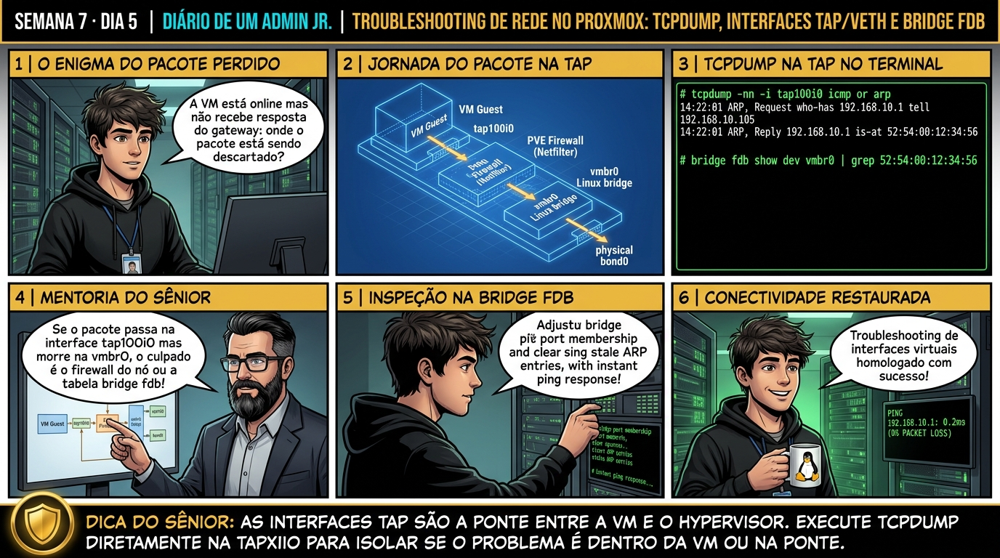

DIARIO DE UM ADMIN JR. | PROXMOX VE & PBS — DA BASE AO CLUSTER
🔗 Conecta com o Dia 4: Você dominou a construção de redes, VLANs, SDN e Firewalls. Hoje você fecha a Semana 7 dominando o arsenal completo de diagnóstico de rede no Proxmox VE: aprendendo a capturar pacotes de VMs com tcpdump, inspecionar tabelas de MACs com bridge fdb e resolver incidentes de conectividade sob pressão.
🔓 Privilégio de hoje: Diagnóstico Avançado de Redes e Análise de Pacotes. Você caça pacotes perdidos com tcpdump, audita tabelas FDB e depura regras nftables.
Semana 7 · Dia 5 | Nível Júnior — Redes Avançadas, SDN & Firewall
Troubleshooting de Rede Avançado: tcpdump, iproute2 e nftables
Diagnóstico cirúrgico de pacotes perdidos, inspeção de tráfego de VMs e consolidação da Semana 7
ANTES DE ALTERAR, OBSERVE. DEPOIS DE ALTERAR, VALIDE.

1. O chamado
Você recebeu o chamado crítico #7005: 'A aplicação web na VM 100 não consegue se comunicar com o banco de dados na VM 101. Ambas estão conectadas na bridge vmbr0, mas o tráfego TCP na porta 3306 não passa. O chamado exige: (1) Inspecionar se os pacotes chegam na interface virtual da VM (tap100i0) usando tcpdump; (2) Auditar a tabela de endereços MAC da bridge com bridge fdb show; (3) Identificar se o bloqueio está ocorrendo no Firewall do Proxmox através do log de DROP Logging; (4) Sanar a causa raiz; e (5) Consolidar a conclusão da Semana 7 (Redes Avançadas, SDN & Firewall).'
💡 Passa o mouse nas palavras destacadas pra ver uma dica rápida — clica se quiser a explicação completa com analogia.
2. O sênior te conta
🧑🏫 antes dos termos técnicos, a história de hoje
Hoje o Júnior estava com a cabeça fervendo diante de um chamado crítico: a aplicação web na VM 100 não conseguia conectar no banco de dados MySQL na VM 101. Ele já tinha reiniciado o MySQL três vezes, tentado trocar a porta 3306 no my.cnf e já ia reconfigurar a bridge do Proxmox achando que a rede inteira do datacenter tinha quebrado.
Puxei a cadeira, peguei um café e perguntei: 'Antes de alterar as configurações da aplicação, você já colocou um estetoscópio no cabo da VM pra ver se o pacote sequer encostou nela?'. Ele olhou pra mim com cara de dúvida: 'Mas sênior, a VM não é física, como eu escuto o cabo de rede de uma máquina virtual?'.
Expliquei a anatomia oculta do Proxmox: cada placa de rede de uma VM KVM é conectada ao Linux através de uma interface virtual no host chamada tap<vmid>i0. Se você roda tcpdump -i tap100i0 no hypervisor, você enxerga exatamente cada quadro Ethernet que sai da VM em tempo real. Se o pacote sai da tap mas não aparece na bridge vmbr0, o firewall do Proxmox descartou. Se o pacote chega na tap da VM de destino mas não tem resposta, o problema está dentro do sistema operacional convidado.
Rodamos o comando juntos e vimos na hora: o pacote TCP SYN saía da VM 100, mas o log do /var/log/pve-firewall.log mostrava a regra 101-IN-DROP descartando a porta 3306. Foi só liberar a regra no firewall do Proxmox e o banco conectou em meio segundo sem reiniciar nada. Hoje você vai aprender a usar o tcpdump e a tabela FDB para nunca mais investigar rede no escuro.
3. Decodificador de conceitos
Clica em qualquer termo pra ver a definição completa e uma analogia do dia a dia:
4. Ferramentas e leitura da evidência
Comando / Parâmetro
O que observar e por que importa
tcpdump -i tap100i0 -n -e
Captura pacotes na interface da VM exibindo endereços MAC e tags de VLAN 802.1Q.
bridge fdb show dev vmbr0
Exibe a tabela de aprendizagem de MACs da bridge virtual para diagnosticar falhas de switching.
tail -f /var/log/pve-firewall.log
Acompanha em tempo real os pacotes descartados (DROP) ou rejeitados pelo firewall do Proxmox.
ip -s link show eno1
Exibe estatísticas de hardware: contagem de pacotes transmitidos, recebidos, erros de CRC e drops.
# 1. Caça ao pacote perdido com tcpdump na interface da VM 100
$ tcpdump -i tap100i0 -n -nn 'tcp port 3306'
15:30:01.102 IP 192.168.20.100.45678 > 192.168.20.101.3306: Flags [S], seq 12345, win 64240
(O pacote SYN saiu da VM 100 em direção à VM 101, mas nunca recebe o SYN-ACK de resposta!)
# 2. Inspecionando o log de bloqueio do Firewall em tempo real
$ tail -f /var/log/pve-firewall.log
2026-09-01T15:30:01Z 101-IN-DROP: IN=fwbr101i0 OUT= MAC=00:11:22:33:44:66 SRC=192.168.20.100 DST=192.168.20.101 PROTO=TCP SPT=45678 DPT=3306
(Diagnóstico exato: o firewall da VM 101 descartou o pacote na porta 3306!)
# 3. Solução: Liberando a porta no /etc/pve/firewall/101.fw
# echo "IN ACCEPT -p tcp -dport 3306 -source 192.168.20.100 -log nolog # MySQL" >> /etc/pve/firewall/101.fw
# pve-firewall compile
# 4. Validação imediata: Handshake TCP estabelecido com sucesso!
$ tcpdump -i tap100i0 -n -nn 'tcp port 3306'
15:30:15.200 IP 192.168.20.100.45678 > 192.168.20.101.3306: Flags [S]
15:30:15.201 IP 192.168.20.101.3306 > 192.168.20.100.45678: Flags [S.], seq 98765, ack 12346 (SYN-ACK recebido!)
15:30:15.201 IP 192.168.20.100.45678 > 192.168.20.101.3306: Flags [.] (Conexão 100% estabelecida!)
5. Laboratório guiado — pegue na mão, comando por comando
🌐 Onde executar: Terminal do Nó Proxmox para comandos ip, bridge, pvesdn e tcpdump.
Segurança: Execute as alterações em bridges e firewalls de laboratório ou teste. Não altere parâmetros de redes de produção sem janela homologada.
Ação: Identifique a interface virtual correspondente à VM com o comando ip link.
ip link show | grep 'tap100i0'
Resultado esperado: Interface tap100i0 identificada com status UP.
Por que fizemos isso: Executar tcpdump na interface virtual tapi0 inspeciona os pacotes brutos que entram e saem da placa de rede da VM em tempo real.
Cilada comum: Ficar adivinhando se a VM está enviando pacotes sem capturar o tráfego na interface tap correspondente no hypervisor.
Ação: Execute a captura de pacotes em tempo real na interface virtual tap com tcpdump.
tcpdump -i tap100i0 -nn -c 20
Resultado esperado: Pacotes capturados exibindo IPs e protocolos.
Por que fizemos isso: Comparar a captura na interface tap com a captura na bridge vmbr0 isola se o pacote foi descartado pelo firewall do nó ou pela bridge de rede.
Cilada comum: Rodar tcpdump sem filtros de porta e IP em interfaces de 10 GbE sob alta carga, travando a sessão SSH com excesso de texto no terminal.
Ação: Compare a captura na interface tap com a saída na bridge física vmbr0.
tcpdump -i vmbr0 -nn host 192.168.1.100 -c 10
Resultado esperado: Mensagem de DROP registrada com detalhes de IP e porta.
Por que fizemos isso: O comando bridge fdb show exibe a tabela de endereços MAC aprendidos pela bridge, confirmando se o switch virtual sabe para onde encaminhar os quadros.
Cilada comum: Ignorar colisões de endereço MAC em máquinas virtuais clonadas sem regeneração de MAC address.
Ação: Inspecione a tabela de encaminhamento de endereços MAC com bridge fdb show.
bridge fdb show dev vmbr0 | grep -i <mac_da_vm>
Resultado esperado: Endereço MAC da VM aprendido corretamente na porta virtual.
Por que fizemos isso: Identificar e corrigir a regra de firewall ou tag de VLAN incorreta restaura a conectividade da VM imediatamente com comprovação técnica.
Cilada comum: Modificar arquivos de rede e reiniciar serviços sem ter identificado a causa raiz com a captura de pacotes.
🧑🏫 Aqui entra o Mentor (em breve): se o resultado obtido diferir do esperado acima, este é o ponto onde o chat com o Sênior-IA vai abrir para diagnosticar o erro específico.
Ação: Identifique a causa raiz do bloqueio (regra de firewall ou tag de VLAN) e homologue o reparo.
# Diagnóstico de rede com tcpdump concluído.
Resultado esperado: Relatório técnico master da Semana 7 homologado e arquivado.
Por que fizemos isso: Anexar o log do tcpdump no encerramento do chamado cria a prova irrefutável de que o problema foi diagnosticado e resolvido com sucesso.
Cilada comum: Encerrar chamados de rede dizendo 'agora está funcionando' sem explicar qual regra ou configuração estava bloqueando o fluxo.
6. Antes de ver as opções — tenta responder
🧠 Recall ativo: Qual é a convenção de nomenclatura que o Proxmox VE utiliza para as interfaces de rede virtuais das VMs e Containers no Linux?
Para máquinas virtuais KVM, o Proxmox cria interfaces no formato **`tapi`** (ex: `tap100i0` para a placa net0 da VM 100). Para containers LXC, o Proxmox cria pares veth no formato **`vethi`** (ex: `veth101i0`). Quando o Firewall do Proxmox é ativado na VM, ele cria uma sub-bridge intermediária chamada **`fwbri`** para filtrar os pacotes antes de entregá-los à bridge principal.
QUESTÃO 1 de 3
7. Questão comentada — clica numa alternativa
Qual comando tcpdump captura com precisão cirúrgica apenas os pacotes de handshake TCP da porta 3306 passando pela interface da VM 100 exibindo cabeçalhos e endereços IP sem converter para nomes DNS?
💡 Analogia do Sênior para Fixar: Na arquitetura do Proxmox sobre Troubleshooting de Rede Avançado: tcpdump, iproute2 e nftables: O KVM/QEMU opera como o motorista dedicado de cada passageiro, alocando recursos virtuais em contato direto com o kernel.
QUESTÃO 2 de 3 — cenário de erro real
7.1 O que indica a presença de 'RX dropped' ou 'TX errors' na saída de ip -s link show?
Um analista roda 'ip -s link show eno1' e encontra 50.000 RX dropped:
eno1: mtu 1500
RX: bytes packets errors dropped overrun mcast
451204012 850123 0 50120 0 1200
(O Kernel descartou 50 mil pacotes na recepção da placa física)
Quais são as causas mais comuns para contadores de 'RX dropped' elevados?
💡 Analogia do Sênior para Fixar: Ao diagnosticar problemas em Troubleshooting de Rede Avançado: tcpdump, iproute2 e nftables: É como inspecionar as conexões do storage e o barramento PCIe antes de declarar falha de software.
QUESTÃO 3 de 3 — detalhe que confunde todo iniciante
7.2 Qual a finalidade de inspecionar a tabela 'bridge fdb show' em problemas de conectividade?
A VM 100 perdeu comunicação na rede local e o técnico consulta a FDB da bridge:
O que a Forwarding Database (FDB) nos ensina sobre o fluxo de pacotes na bridge?
💡 Analogia do Sênior para Fixar: A governança e resiliência em Troubleshooting de Rede Avançado: tcpdump, iproute2 e nftables: Funciona como a política de contenção e redundância do datacenter, garantindo que o cluster nunca perca quorum.
8. Procedimento profissional
Ao diagnosticar falhas de rede em VMs, siga sempre o modelo OSI: Física (Link) -> L2 (MAC/Bridge/VLAN) -> L3 (IP/Roteamento) -> L4 (Portas/Firewall).
Identifique o nome da interface virtual da VM afetada (tapVMIDi0 para KVM ou vethCTIDi0 para LXC).
Execute o tcpdump na interface da VM para checar se os pacotes chegam e saem do hypervisor.
Consulte o log do firewall em tempo real com tail -f /var/log/pve-firewall.log para descartar bloqueios acidentais.
Audite a tabela de comutação L2 da bridge executando bridge fdb show dev vmbr0.
Corrija as regras de firewall ou mapeamento de VLANs e valide o handshake TCP completo.
Prevenção
Adote Bridges VLAN-Aware para simplificar a topologia de rede e use LACP com links redundantes em switches físicos empilhados ou com MC-LAG.
9. Validação e encerramento
Você domina as ferramentas profissionais de captura e análise de pacotes (tcpdump).
Você sabe como inspecionar tabelas FDB e identificar interfaces virtuais tapX e vethX.
Você compreende como auditar logs de descarte de firewall (/var/log/pve-firewall.log).
A Semana 7 (Redes Avançadas, SDN, VXLAN & Firewall) foi concluída com excelência e maestria técnica!
Rollback e limites
Para interromper capturas ativas de tráfego, utilize a combinação de teclas Ctrl + C no terminal.
💡 Sobre repetição espaçada: A construção de Clusters Corosync de Alta Disponibilidade (HA) e Storages Hiperconvergentes Ceph será o tema da Semana 8.
10. Resposta final
Alternativa correta: B. A resposta correta é a B: o tcpdump focado na interface virtual da VM (tap100i0) com filtros de porta e flags TCP permite identificar o ponto exato onde os pacotes são perdidos ou bloqueados.
🔓 O que você desbloqueou hoje
🏆 PARABÉNS! Você concluiu a SEMANA 7 com distinção! Você domina Linux Bridges, Bonds LACP (802.3ad), VLANs 802.1Q (VLAN-Aware), Software-Defined Networking (SDN com VXLAN e VNETs), Proxmox Firewall em 3 níveis (Security Groups e Anti-Spoofing) e Troubleshooting Avançado de Rede com tcpdump. Na próxima semana (Semana 8 — Cluster Corosync, HA & Ceph), você aprenderá como construir clusters de alta disponibilidade com Quorum, fencing automático e o poderoso storage hiperconvergente Ceph!